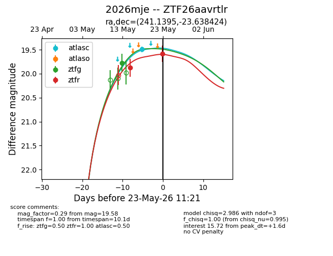
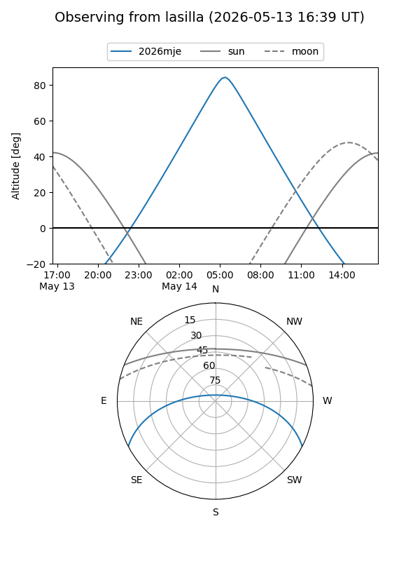
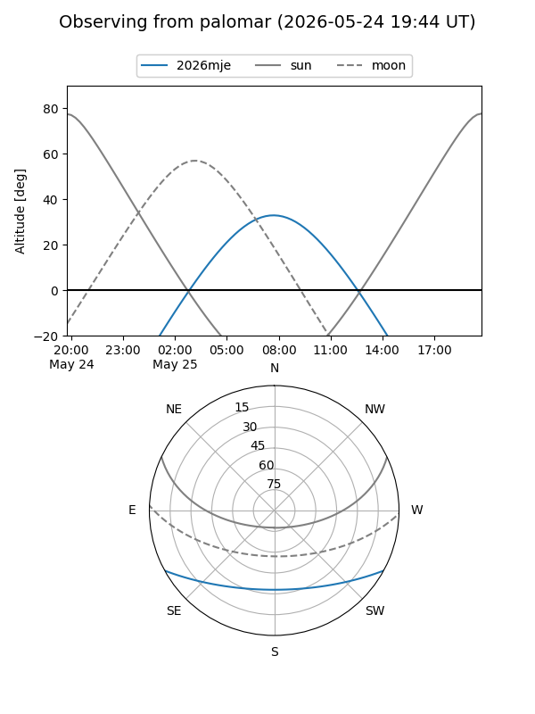
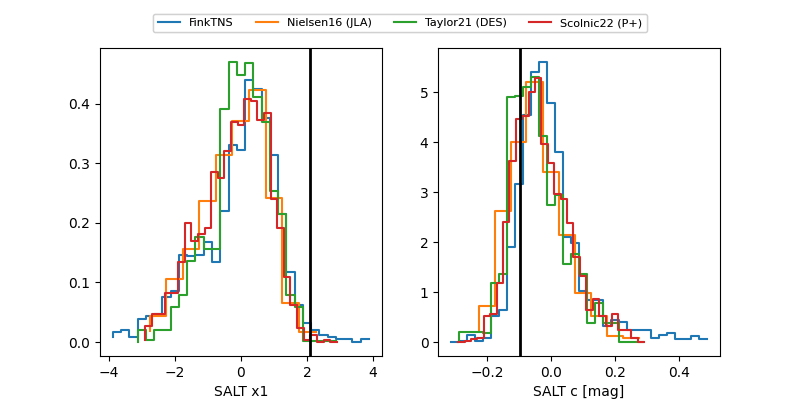

2026mje
Target 2026mje at 2026-05-23 11:22
Aliases and brokers:
lsst-FINK: link
lsst-Lasair: link
lsst-ALeRCE: link
ztf-FINK: link
ztf-Lasair: link
ztf-ALeRCE: link
TNS: link
YSE: link
alt names
ZTF26aavrtlr (ztf,fink_ztf)
2026mje (tns,yse)
Coordinates:
equatorial (ra, dec) = 241.1395,-23.63842
equatorial (HMS+DMS) = 16:04:33.48,-23:38:18.33
galactic (l, b) = (350.0572,+21.08486)
Flags:
Photometry:
last atlasc=19.49, ztfg=19.77, ztfr=19.58
1 atlasc, 1 ztfg, 2 ztfr detections
Lightcurve

Visibility


Additional plots
